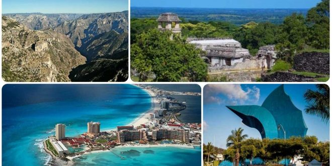

Bienvenido Agencia de Viajes Anna
Agencia de Viajes Anna, es un amepresa de viajes turisticos lider en Mexico, con presencia en varias ciudades principales.
Viajes Anna es una agencia de viajes dedicada a la promocion y planeacion del turismo nacional e internacional Nuestro principal objetivos es brindar sastifaccion a nuestros clientes mediante productos y servicios de excelente calidad. Para ellos contamos con un equipo humano totalmente calificado y con los ultimos avances tecnologicos que lanza la industria del turismo a nivel munidal. Nuestro fin, marca la diferencia: nuestros productos, servicios, y conocimientos, ayudan a personas de toda la region a dar forma y hacer realidad sus viajes de negocio y placer.
Deseamos indifundir nuestra y liderazgo como la empresa lider en el mercado turístico, en todo el territorio nacional y el mundo. Mediante un modelo de gestion orientado a la creacion permanete de valor para nuestros clientes, nuestros accionastas, nuestro empledo y para el país.

Sucursales
Puede encontrar oficinas de Agencia de Viajes Anna en las siguientes ciudades de México:
- Guadalajara
- Los Mochis
- Monterrey
promociones del Mes
para el mes Marzo te llevamos por un increible tour por san Luis Potosi "Huasteca Potosina" donde podrás conocer los lugares más interesante de esta ciudad. Ver más información...
Agencia de Viajes Anna, la empresa de Viajes turisticos líder de México
Carretera 28 No. 28-124- Los Ciruelos - Teléfonos (555-8943-256)
México, D.F.